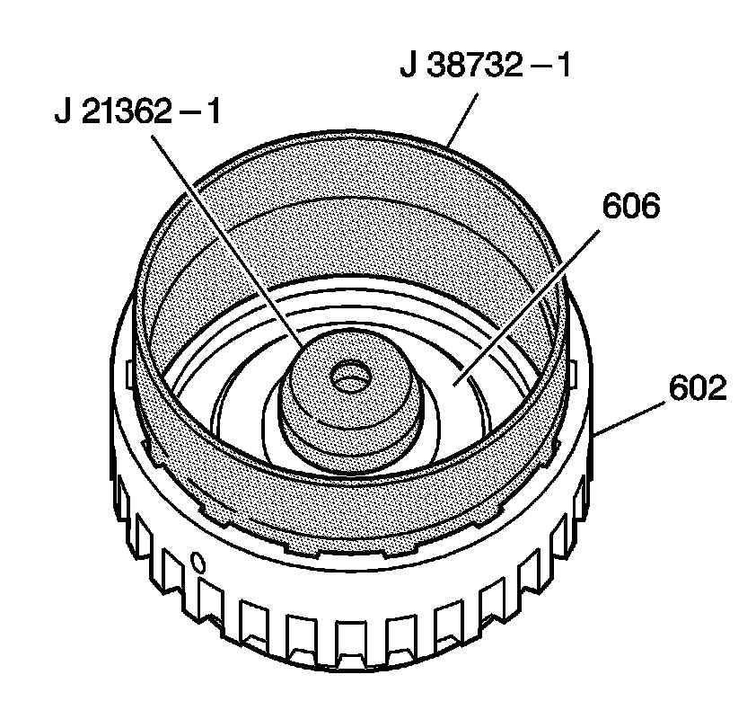
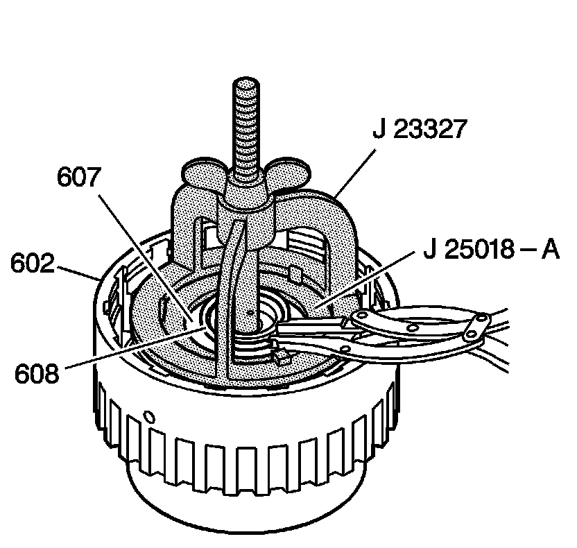
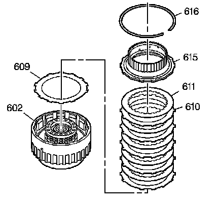

Forward Clutch Assembly Assemble
Forward Clutch Assembly Assemble
Tools Required
^ J 21362-1 Forward Clutch Piston and Inner Seal Protector
^ J 23327 Clutch Spring Compressor
^ J 25018-A Clutch Spring Compressor Adapter
^ J 36850 Transjel(R) Lubricant
^ J 38732-1 Direct and Forward Clutch Piston and Seal Outer Protector

1. Lubricate the seal on the forward clutch piston assembly (606) with DEXRON(R)VI transmission fluid.
2. Lubricate the forward clutch piston intermediate seal assembly (685) with DEXRON(R)VI transmission fluid.
3. Install the J 21362-1 over the hub of the forward clutch housing assembly (602).
4. Place the forward clutch piston assembly (606) inside the J 38732-1 and insert the assembly into the forward clutch housing assembly (602).
5. Push down on and slightly rotate the forward clutch piston assembly (606) until it is seated.
6. Remove the tools.

7. Install the forward clutch spring assembly (607).
8. Using the J 23327 and the J 25018-A, compress the forward clutch spring assembly (607).
9. Install the forward clutch spring retainer ring (608).
10. Remove the tools.

11. Dip the forward clutch plates in DEXRON(R)VI transmission fluid.
12. Install the forward clutch (waved) plate (609) into the forward clutch housing assembly (602).
Important: Alternate the clutch plates, starting with the steel clutch plate (5 steel and 5 composite).
13. Install the steel and composite forward clutch plates (610, 611).
Important: The forward clutch hub, forward clutch housing thrust washer and the direct clutch housing thrust washer should not be installed at this time. This allows easier access in order to perform the forward clutch piston travel check.
14. Install the direct clutch hub (615).
15. Install the direct clutch hub retainer ring (616).